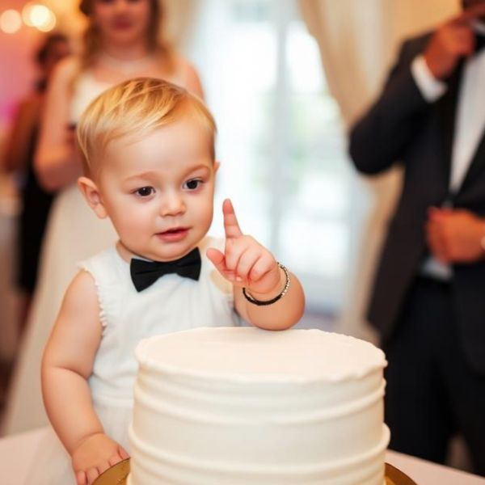

Episode 14 · May 1, 2026 · 23 min
Kids at Weddings
▶ Play this episode
Show Notes
This episode of Wedding Police , Penny and Jim tackle the age-old question: should kids be invited to weddings, or politely left with a babysitter and a juice box? The hosts debate the pros (tiny suits, adorable dance moves) versus the cons (sticky fingers, mid-ceremony meltdowns), and share survival tips for couples brave enough to say “yes” to kids. The verdict? Kids can be cute, chaotic, and completely unpredictable—so plan accordingly… and maybe hide the cake. 🚨💍
🚨 Never Miss a Case
New episodes every week. Follow The Wedding Police so the next one lands in your feed.